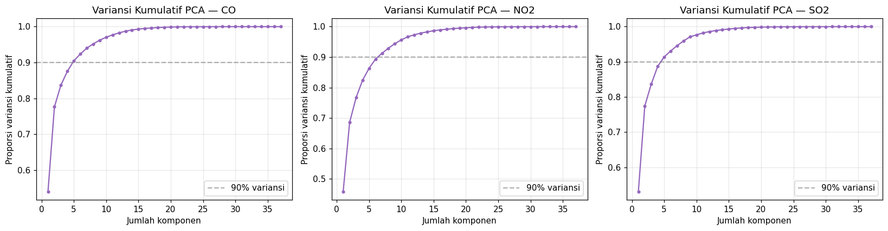
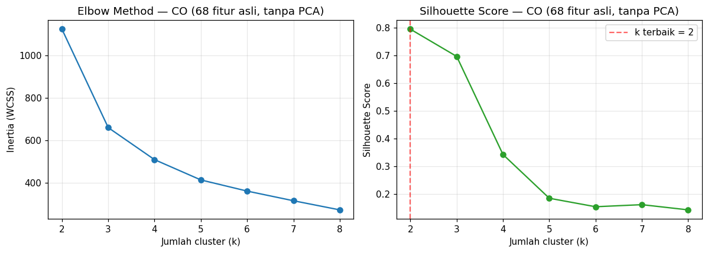
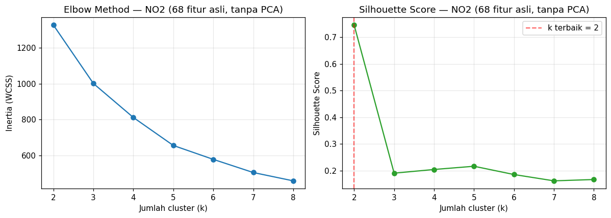
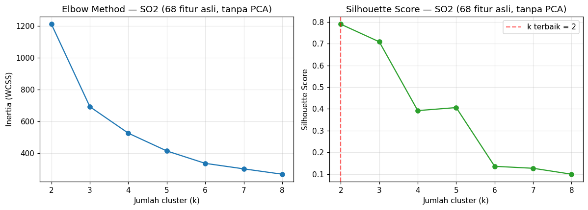

Analisis Penentuan Jumlah Cluster Optimal pada K-Means Clustering#
Data Fitur Kualitas Udara (CO, NO2, SO2) — Hasil Ekstraksi TSFEL (68 Fitur)#
Tujuan notebook ini:
Melakukan reduksi dimensi dengan PCA dari 68 fitur menjadi (target) 37 komponen.
Menentukan jumlah cluster (k) terbaik untuk K-Means menggunakan Elbow Method dan Silhouette Score, pada data hasil PCA.
Mengukur seberapa baik data dapat di-cluster (clustering tendency) menggunakan Hopkins Statistic.
Mengulangi seluruh analisis di atas menggunakan 68 fitur asli (tanpa PCA) sebagai pembanding.
Membandingkan hasil PCA (37) vs 68 fitur asli, untuk ketiga polutan: CO, NO2, SO2.
Catatan penting soal data: File yang dianalisis (
ekstraksi_fitur_co.csv,ekstraksi_fitur_no2.csv,ekstraksi_fitur_so2.csv) adalah data yang sudah diekstrak fiturnya (68 fitur TSFEL per baris/lokasi). Notebook ini fokus pada tahap setelah ekstraksi fitur, yaitu reduksi dimensi dan clustering. Data time series mentah per lokasi tidak tersedia, sehingga eksplorasi time series dan pembuktian perhitungan manual fitur TSFEL tidak termasuk dalam notebook ini (dibahas terpisah bila data mentahnya tersedia).
1. Konsep Dasar#
1.1 Principal Component Analysis (PCA)#
PCA adalah teknik reduksi dimensi yang mentransformasi fitur-fitur asli (yang mungkin saling berkorelasi) menjadi sekumpulan variabel baru yang disebut komponen utama (principal components), yang tidak saling berkorelasi dan diurutkan berdasarkan seberapa besar variansi data yang mereka jelaskan.
Secara matematis, PCA mencari vektor eigen dari matriks kovarians data terstandarisasi \(\Sigma\):
di mana \(v_i\) adalah komponen utama ke-\(i\) dan \(\lambda_i\) adalah variansi yang dijelaskan oleh komponen tersebut. Komponen dengan \(\lambda_i\) terbesar dipilih lebih dulu karena menjelaskan variansi data paling banyak.
Kenapa perlu standardisasi sebelum PCA? Karena fitur-fitur TSFEL memiliki skala yang sangat berbeda (misalnya abs_energy bisa bernilai jutaan sedangkan entropy bernilai < 2). Tanpa standardisasi, PCA akan didominasi oleh fitur berskala besar saja.
1.2 K-Means Clustering#
K-Means mengelompokkan data ke dalam \(k\) cluster dengan meminimalkan total jarak kuadrat titik ke centroid clusternya (disebut inertia atau WCSS – Within Cluster Sum of Squares):
1.3 Menentukan Jumlah Cluster (k) Terbaik#
Dua metode yang dipakai di notebook ini:
Elbow Method: memplot nilai inertia terhadap \(k\). Titik “siku” (elbow) — di mana penurunan inertia mulai melandai — mengindikasikan \(k\) yang cukup baik. Metode ini bersifat visual/subjektif.
Silhouette Score: mengukur seberapa mirip suatu titik dengan clusternya sendiri dibanding cluster terdekat lainnya, untuk setiap titik \(i\):
dengan \(a(i)\) = rata-rata jarak \(i\) ke titik lain dalam cluster yang sama, dan \(b(i)\) = rata-rata jarak \(i\) ke titik-titik di cluster terdekat lainnya. Nilai berkisar \([-1, 1]\); semakin mendekati 1 semakin baik. \(k\) terbaik dipilih dari silhouette score rata-rata tertinggi (metode ini lebih objektif dibanding elbow, sehingga dipakai sebagai penentu utama \(k\) terbaik pada notebook ini).
1.4 Hopkins Statistic — Seberapa Baik Data Bisa Di-cluster?#
Sebelum bicara “berapa cluster terbaik”, pertanyaan yang lebih mendasar adalah: apakah data ini punya struktur cluster sama sekali, atau sebarannya acak/seragam (uniform)? Hopkins Statistic menjawab ini dengan membandingkan:
jarak titik-titik asli data ke tetangga terdekatnya (\(u_i\)), vs
jarak titik-titik acak buatan (uniform random) dalam ruang yang sama ke tetangga terdekat di data asli (\(w_i\))
Interpretasi: \(H \approx 0.5\) → data cenderung acak/seragam (tidak ada struktur cluster). \(H\) mendekati 1 → data punya kecenderungan cluster yang kuat. \(H\) mendekati 0 → data cenderung teratur/grid-like (jarang terjadi pada data nyata).
import pandas as pd
import numpy as np
import matplotlib.pyplot as plt
from sklearn.preprocessing import StandardScaler
from sklearn.decomposition import PCA
from sklearn.cluster import KMeans
from sklearn.metrics import silhouette_score
from sklearn.neighbors import NearestNeighbors
import warnings
warnings.filterwarnings("ignore")
plt.rcParams["figure.dpi"] = 110
np.random.seed(42)
FILES = {
"CO": "Data_Polutan_Sekelas/ekstraksi_fitur_co.csv",
"NO2": "Data_Polutan_Sekelas/ekstraksi_fitur_no2.csv",
"SO2": "Data_Polutan_Sekelas/ekstraksi_fitur_so2.csv",
}
2. Memuat & Memeriksa Data#
Setiap file berisi kolom identitas (id, nama, daerah) diikuti 68 kolom fitur numerik hasil ekstraksi TSFEL. Kita periksa dulu ukuran datanya, nilai kosong (NaN), dan fitur yang variansinya nol (fitur konstan — tidak berguna untuk PCA/clustering karena tidak membedakan satu data dengan yang lain, dan bisa membuat proses standardisasi menjadi tidak stabil / dibagi nol).
raw = {}
for name, path in FILES.items():
df = pd.read_csv(path)
raw[name] = df
print(f"--- {name} ---")
print(f" Jumlah baris (sampel/lokasi) : {df.shape[0]}")
print(f" Jumlah kolom fitur : {df.shape[1] - 3} (di luar id, nama, daerah)")
print(f" Total nilai NaN : {df.isna().sum().sum()}")
print()
--- CO ---
Jumlah baris (sampel/lokasi) : 37
Jumlah kolom fitur : 68 (di luar id, nama, daerah)
Total nilai NaN : 0
--- NO2 ---
Jumlah baris (sampel/lokasi) : 37
Jumlah kolom fitur : 68 (di luar id, nama, daerah)
Total nilai NaN : 0
--- SO2 ---
Jumlah baris (sampel/lokasi) : 37
Jumlah kolom fitur : 68 (di luar id, nama, daerah)
Total nilai NaN : 0
3. Preprocessing#
Langkah yang dilakukan untuk setiap dataset polutan:
Pisahkan kolom fitur numerik (buang
id,nama,daerah).Isi nilai NaN dengan median kolom tersebut (median dipilih karena lebih tahan terhadap outlier dibanding mean — dan beberapa fitur TSFEL, misalnya yang berbasis spektral, cenderung memiliki outlier).
Buang fitur dengan variansi nol (nilainya sama untuk semua baris).
Standardisasi (z-score) seluruh fitur: \(z = \dfrac{x - \mu}{\sigma}\), agar semua fitur berkontribusi setara ke PCA dan K-Means (keduanya berbasis jarak Euclidean).
def preprocess(df):
feat_cols = [c for c in df.columns if c not in ["id", "nama", "daerah"]]
X = df[feat_cols].copy()
X = X.fillna(X.median(numeric_only=True))
nunique = X.nunique()
const_cols = nunique[nunique <= 1].index.tolist()
if const_cols:
X = X.drop(columns=const_cols)
scaler = StandardScaler()
X_scaled = scaler.fit_transform(X)
return X, X_scaled, const_cols
processed = {}
for name, df in raw.items():
X, X_scaled, dropped = preprocess(df)
processed[name] = {"X": X, "X_scaled": X_scaled, "dropped": dropped}
print(f"{name}: {X.shape[1]} fitur dipakai (dari 68) setelah membuang {len(dropped)} fitur konstan -> {dropped}")
CO: 65 fitur dipakai (dari 68) setelah membuang 3 fitur konstan -> ['human_range_energy', 'spectral_roll_on', 'zero_cross']
NO2: 66 fitur dipakai (dari 68) setelah membuang 2 fitur konstan -> ['human_range_energy', 'spectral_roll_on']
SO2: 66 fitur dipakai (dari 68) setelah membuang 2 fitur konstan -> ['human_range_energy', 'spectral_roll_on']
4. Hopkins Statistic — Cek Kecenderungan Cluster (Sebelum Menentukan k)#
def hopkins_statistic(X, sample_ratio=0.3, random_state=42):
rng = np.random.RandomState(random_state)
n = X.shape[0]
m = max(2, int(sample_ratio * n))
nbrs = NearestNeighbors(n_neighbors=2).fit(X)
# (a) jarak titik ASLI data ke tetangga terdekatnya (bukan dirinya sendiri)
idx = rng.choice(n, m, replace=False)
u_dist = [nbrs.kneighbors(X[i].reshape(1, -1), n_neighbors=2)[0][0][1] for i in idx]
# (b) jarak titik ACAK (uniform, dalam bounding box data) ke titik data terdekat
mins, maxs = X.min(axis=0), X.max(axis=0)
rand_pts = rng.uniform(mins, maxs, size=(m, X.shape[1]))
w_dist = [nbrs.kneighbors(p.reshape(1, -1), n_neighbors=1)[0][0][0] for p in rand_pts]
U, W = np.sum(u_dist), np.sum(w_dist)
return W / (U + W)
for name, d in processed.items():
h = hopkins_statistic(d["X_scaled"])
processed[name]["hopkins"] = h
if h > 0.75:
ket = "kecenderungan cluster KUAT"
elif h > 0.6:
ket = "kecenderungan cluster CUKUP"
else:
ket = "kecenderungan cluster LEMAH / mendekati acak"
print(f"{name}: Hopkins Statistic = {h:.3f} -> {ket}")
CO: Hopkins Statistic = 0.880 -> kecenderungan cluster KUAT
NO2: Hopkins Statistic = 0.842 -> kecenderungan cluster KUAT
SO2: Hopkins Statistic = 0.886 -> kecenderungan cluster KUAT
5. Fungsi Bantu: Elbow Method + Silhouette Score#
Fungsi evaluate_k_range di bawah ini menjalankan K-Means untuk rentang \(k = 2\) sampai \(8\), lalu mengembalikan tabel berisi inertia (untuk elbow method) dan silhouette score rata-rata untuk tiap \(k\). \(k\) terbaik dipilih berdasarkan silhouette score tertinggi.
def evaluate_k_range(X, k_min=2, k_max=8):
n = X.shape[0]
k_max = min(k_max, n - 1)
rows = []
for k in range(k_min, k_max + 1):
km = KMeans(n_clusters=k, n_init=10, random_state=42)
labels = km.fit_predict(X)
rows.append({
"k": k,
"inertia": km.inertia_,
"silhouette": silhouette_score(X, labels),
})
res = pd.DataFrame(rows)
best = res.loc[res["silhouette"].idxmax()]
return res, int(best["k"]), float(best["silhouette"])
def plot_elbow_silhouette(res, title):
fig, axes = plt.subplots(1, 2, figsize=(11, 4))
axes[0].plot(res["k"], res["inertia"], marker="o", color="tab:blue")
axes[0].set_title(f"Elbow Method — {title}")
axes[0].set_xlabel("Jumlah cluster (k)")
axes[0].set_ylabel("Inertia (WCSS)")
axes[0].grid(alpha=0.3)
axes[1].plot(res["k"], res["silhouette"], marker="o", color="tab:green")
best_k = res.loc[res["silhouette"].idxmax(), "k"]
axes[1].axvline(best_k, color="red", linestyle="--", alpha=0.6, label=f"k terbaik = {best_k}")
axes[1].set_title(f"Silhouette Score — {title}")
axes[1].set_xlabel("Jumlah cluster (k)")
axes[1].set_ylabel("Silhouette Score")
axes[1].legend()
axes[1].grid(alpha=0.3)
plt.tight_layout()
plt.show()
6. Reduksi Dimensi PCA → 37 Komponen#
Catatan teknis penting: jumlah komponen PCA maksimum secara matematis dibatasi oleh \(\min(\text{jumlah sampel}, \text{jumlah fitur})\). Karena jumlah sampel pada dataset CO dan SO2 (35 lokasi) lebih kecil dari target 37 komponen, PCA untuk kedua dataset tersebut dibatasi otomatis ke jumlah sampel yang tersedia (bukan berarti error — ini konsekuensi matematis biasa saat jumlah fitur/komponen yang diminta melebihi jumlah observasi). Untuk NO2 (37 lokasi), target 37 komponen tercapai penuh. Hal ini penting dicatat di laporan karena mempengaruhi interpretasi hasil PCA pada bagian selanjutnya.
N_TARGET = 37
for name, d in processed.items():
n_samples, n_features = d["X_scaled"].shape
n_actual = min(N_TARGET, n_samples, n_features)
pca = PCA(n_components=n_actual, random_state=42)
X_pca = pca.fit_transform(d["X_scaled"])
cum_var = np.sum(pca.explained_variance_ratio_)
d["pca_model"] = pca
d["X_pca"] = X_pca
d["n_comp_actual"] = n_actual
d["cum_var"] = cum_var
flag = "" if n_actual == N_TARGET else f" (DIBATASI dari target {N_TARGET} karena hanya ada {n_samples} sampel)"
print(f"{name}: {n_actual} komponen PCA -> variansi kumulatif dijelaskan = {cum_var*100:.2f}%{flag}")
CO: 37 komponen PCA -> variansi kumulatif dijelaskan = 100.00%
NO2: 37 komponen PCA -> variansi kumulatif dijelaskan = 100.00%
SO2: 37 komponen PCA -> variansi kumulatif dijelaskan = 100.00%
fig, axes = plt.subplots(1, 3, figsize=(15, 4))
for ax, (name, d) in zip(axes, processed.items()):
cum = np.cumsum(d["pca_model"].explained_variance_ratio_)
ax.plot(range(1, len(cum) + 1), cum, marker=".", color="tab:purple")
ax.axhline(0.9, color="gray", linestyle="--", alpha=0.6, label="90% variansi")
ax.set_title(f"Variansi Kumulatif PCA — {name}")
ax.set_xlabel("Jumlah komponen")
ax.set_ylabel("Proporsi variansi kumulatif")
ax.legend()
ax.grid(alpha=0.3)
plt.tight_layout()
plt.show()

7. Menentukan Jumlah Cluster Terbaik — Data Hasil PCA (37 komponen)#
pca_results = {}
for name, d in processed.items():
res, k_best, sil_best = evaluate_k_range(d["X_pca"])
pca_results[name] = (res, k_best, sil_best)
plot_elbow_silhouette(res, f"{name} (PCA, {d['n_comp_actual']} komponen)")
print(f"{name}: k terbaik = {k_best} (silhouette = {sil_best:.3f})\n")
---------------------------------------------------------------------------
NameError Traceback (most recent call last)
Cell In[1], line 2
1 pca_results = {}
----> 2 for name, d in processed.items():
3 res, k_best, sil_best = evaluate_k_range(d["X_pca"])
4 pca_results[name] = (res, k_best, sil_best)
NameError: name 'processed' is not defined
8. Menentukan Jumlah Cluster Terbaik — 68 Fitur Asli (Tanpa PCA)#
Langkah yang persis sama diulang, kali ini langsung pada data yang sudah distandarisasi tanpa reduksi dimensi, sebagai pembanding.
full_results = {}
for name, d in processed.items():
res, k_best, sil_best = evaluate_k_range(d["X_scaled"])
full_results[name] = (res, k_best, sil_best)
plot_elbow_silhouette(res, f"{name} (68 fitur asli, tanpa PCA)")
print(f"{name}: k terbaik = {k_best} (silhouette = {sil_best:.3f})\n")

CO: k terbaik = 2 (silhouette = 0.795)

NO2: k terbaik = 2 (silhouette = 0.745)

SO2: k terbaik = 2 (silhouette = 0.789)
9. Ringkasan & Perbandingan: PCA (37) vs 68 Fitur Asli#
summary_rows = []
for name, d in processed.items():
_, k_pca, sil_pca = pca_results[name]
_, k_full, sil_full = full_results[name]
summary_rows.append({
"Polutan": name,
"n_sampel": d["X_scaled"].shape[0],
"n_fitur_dipakai": d["X_scaled"].shape[1],
"Hopkins": round(d["hopkins"], 3),
"n_komponen_PCA": d["n_comp_actual"],
"Var._dijelaskan_PCA (%)": round(d["cum_var"] * 100, 1),
"k_terbaik (PCA)": k_pca,
"Silhouette (PCA)": round(sil_pca, 3),
"k_terbaik (68 fitur)": k_full,
"Silhouette (68 fitur)": round(sil_full, 3),
})
summary_df = pd.DataFrame(summary_rows)
summary_df
| Polutan | n_sampel | n_fitur_dipakai | Hopkins | n_komponen_PCA | Var._dijelaskan_PCA (%) | k_terbaik (PCA) | Silhouette (PCA) | k_terbaik (68 fitur) | Silhouette (68 fitur) | |
|---|---|---|---|---|---|---|---|---|---|---|
| 0 | CO | 37 | 65 | 0.880 | 37 | 100.0 | 2 | 0.795 | 2 | 0.795 |
| 1 | NO2 | 37 | 66 | 0.842 | 37 | 100.0 | 2 | 0.745 | 2 | 0.745 |
| 2 | SO2 | 37 | 66 | 0.886 | 37 | 100.0 | 2 | 0.789 | 2 | 0.789 |
10. Interpretasi & Kesimpulan#
Panduan interpretasi Silhouette Score (Kaufman & Rousseeuw):
Rentang skor |
Interpretasi struktur cluster |
|---|---|
0.71 – 1.00 |
Struktur kuat (strong) |
0.51 – 0.70 |
Struktur cukup meyakinkan (reasonable) |
0.26 – 0.50 |
Struktur lemah, bisa artifisial (weak) |
≤ 0.25 |
Tidak ada struktur cluster yang berarti |